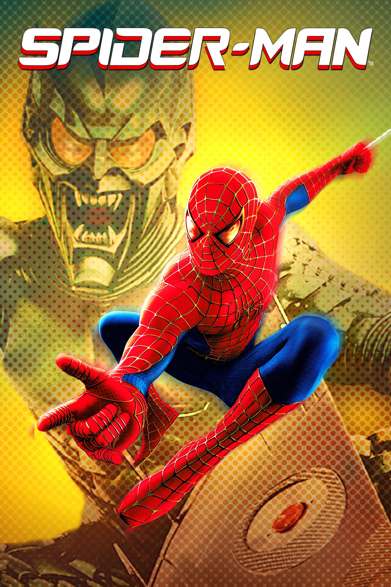

Spiderman1.html
1Spiderman.Alejandro
Spider-Man

1Spiderman.Alejandro
Spiderman 1
Voy a la pagina Base
Voy a la pagina Spider-Man 2
Voy a la pagina Spider-Man 3
Discurso:
Dos años después de la muerte de Norman Osborn, Peter Parker, también conocido como el superhéroe Spider-Man, se distancia tanto de su interés amoroso Mary Jane Watson como de su mejor amigo Harry Osborn; también descubre que su tía May se enfrenta al desalojo. Se encuentra sufriendo pérdidas temporales pero recurrentes de sus poderes, a menudo en situaciones que ponen en peligro su vida.
Harry, que ahora es jefe de la división de investigación genética y científica de Oscorp, patrocina un proyecto de energía de fusión del científico nuclear Otto Octavius, quien se hace amigo y mentor de Peter. Mientras maneja materiales peligrosos, Octavius usa un arnés de poderosos brazos robóticos con tentáculos con inteligencia artificial. Durante una demostración pública a la que asisten Peter y Harry, un pico de energía hace que el reactor de fusión se desestabilice. Octavius se niega a apagar el reactor, lo que se vuelve crítico: mata a su esposa y quema el chip inhibidor que bloquea los brazos de su sistema nervioso. Peter, como Spider-Man, cierra el experimento, destruyéndolo en el proceso.
En un hospital, los médicos se preparan para quitar quirúrgicamente el arnés de Octavius. Sin el chip inhibidor, los brazos ahora sensibles se defienden matando a los médicos. Al recuperar la conciencia y ver la masacre, Octavius escapa y se refugia en un puerto. Cada vez más influenciado por la IA de los brazos, decide volver a intentar su experimento. Roba un banco para financiar un segundo experimento. Peter y May casualmente están allí, y Octavius toma a May como rehén. Peter la rescata, pero Octavius huye con el dinero robado. El Daily Bugle posteriormente apoda al científico Doctor Octopus.
Mary Jane se compromete con el astronauta John Jameson, hijo del editor de Bugle, J. Jonah Jameson. Peter sufre un colapso emocional por su incapacidad para equilibrar su vida y pierde sus poderes. Deja de ser Spider-Man, vuelve a su vida normal e intenta reconciliarse con Mary Jane, pero con poco éxito. Un basurero le lleva el disfraz de Peter a Jameson, quien se atribuye el mérito de haber llevado a Spider-Man a la clandestinidad. Peter le dice a May la verdad detrás de la muerte de su tío Ben y cómo es responsable. May lo perdona, pero el aumento de las tasas de crimen en la ciudad de Nueva York preocupa a Peter.
Al requerir el isótopo tritio para alimentar su reactor, Octavius visita a Harry para exigirlo. Harry acepta a cambio de Spider-Man, a quien cree que es responsable de la muerte de Norman. Le dice a Octavius que busque a Peter, quien Harry cree que es amigo de Spider-Man, pero le dice a Octavius que no le haga daño. Octavius localiza a Peter, le dice que encuentre a Spider-Man y captura a Mary Jane. Su peligro hace que los poderes de Peter resuciten. Cuando Jameson admite que estaba equivocado acerca de Spider-Man, Peter le roba su disfraz al Bugle y va tras Octavius.
Mientras Peter lucha contra Octavius, caen sobre un tren subterráneo de la ciudad de Nueva York. Octavius sabotea los controles y deja a Peter para salvar a los pasajeros, lo que hace con un gran costo físico. Cuando se desmaya de cansancio, los agradecidos pasajeros lo salvan de la caída y lo suben al tren, viendo su rostro desenmascarado pero prometiendo mantener oculto sus conocimientos. Intentan sin éxito protegerlo cuando Octavius regresa para capturar a Peter, a quien Octavius le entrega a Harry.
Después de darle a Octavius el tritio, Harry se prepara para matar a Spider-Man, solo para sorprenderse al ver a Peter debajo de la máscara. Peter convence a Harry de que lo lleve a la guarida de Octavius, ya que hay cosas más importantes en juego. Cuando Peter llega al laboratorio de Octopus frente al mar e intenta rescatar a Mary Jane discretamente, Octavius lo descubre, y luchan mientras la reacción nuclear aumenta y comienza a amenazar la ciudad. Peter finalmente somete a Octavius, revela su identidad y persuade a Octavius para que abandone su sueño por un bien mayor. Octavius ordena a los tentáculos que le obedezcan y se sacrifica para destruir el experimento. Mary Jane ve la verdadera identidad y los sentimientos de Peter, y dice que es por eso que no pueden estar juntos. Peter le devuelve Mary Jane a John y se va.
Harry recibe una visión de su padre en un espejo, suplicando a Harry que vengue su muerte. Enfurecido, Harry rompe el espejo, revelando inadvertidamente una habitación secreta que contiene prototipos del equipo del Duende Verde. El día de su boda, Mary Jane abandona a John en el altar y corre al apartamento de Peter. Después de besarse, escuchan las sirenas de la policía y Mary Jane lo anima a ir a ayudar como Spider-Man.
Repartos:
Tobey Maguire: Peter Parker / Spider-Man
Kirsten Dunst: Mary Jane Watson
Alfred Molina: Dr. Otto Octavius / Doctor Octopus
James Franco: Harry Osborn
Rosemary Harris: Tía May Parker
J.K. Simmons: J. Jonah Jameson
Donna Murphy: Rosalie Octavius
Daniel Gillies: John Jameson
Dylan Baker: Dr. Curt Connors
Bill Nunn: Joseph "Robbie" Robertson
Elizabeth Banks: Betty Brant
Bruce Campbell: El "Hombre del Tutorial" (Cameo)